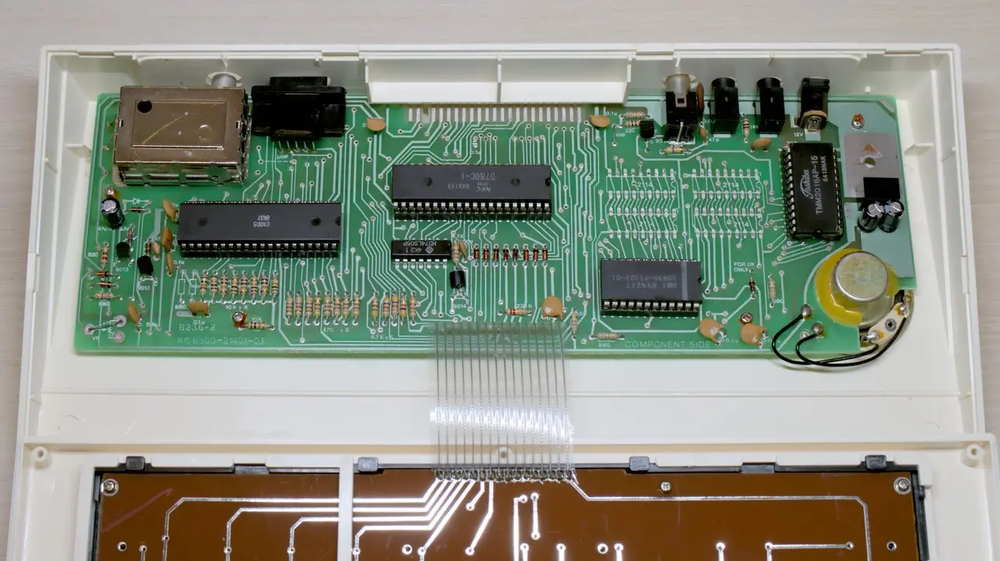

Lambda Electronics Lambda 8300
Status: Working
The Lambda 8300 is a Sinclair ZX81 clone from Lambda Electronics Ltd of Hong Kong. In Germany it was sold as Power 3000 or Tonel PC, but it was rather unknown on the market. In fact, I first heard of it in 2023, although I was very interested in other home computer models back in the 1980s.
It is not a fully compatible clone, as it has a different character set and a different BASIC ROM (which allowed typing out the keywords instead of having them assigned to individual keys). The expansion port is identical to the ZX81 though.
Configuration
- Built: End of 1984
- CPU: Z80A, 3.25MHz (date code 8401)
- ULA: C4005 (date code 8437)
- RAM: 2KB static (TMM2016AP-15, date code 8418)
- ROM: 8KB (AMI 10830-21103-01, date code 8442)
Trivia
- I first got a Lambda 8300 RAM expansion, then this machine, then the Lambda 8300 Color expansion.
- The serial number badge was lost, so the serial number is unknown. It must be higher than 015031 though, as the BASIC understands the color commands
BORDER,PAPER, andINK.
Restauration Works
- Cleaned the case and the keyboard
- Replaced all capacitors
- Replaced the 7805 and heatsink with Traco Power DC/DC converter, to reduce heat inside the case.
- Composite modded the TV modulator. To revert it, the red wire needs to be removed, and the two power wires and one output wire needs to be reattached inside the modulator. I cut the wires, so the board of the modulator needs to be taken out for reversal.
Known Issues
- The dedicated monitor output is problematic to modern converters. I did a composite mod with the TV modulator. The picture quality is better there, but the Retrotink-2X mini still fails to show a stable picture when keys are pressed.
History
- 2023-08-19
- Recapped
- Replaced 7805 and heatsink with Traco Power DC/DC converter
- Cleaned the case and keyboard
- Composite modded the TV modulator (reversible)
- Tested
- 2023-08-07: Date of purchase